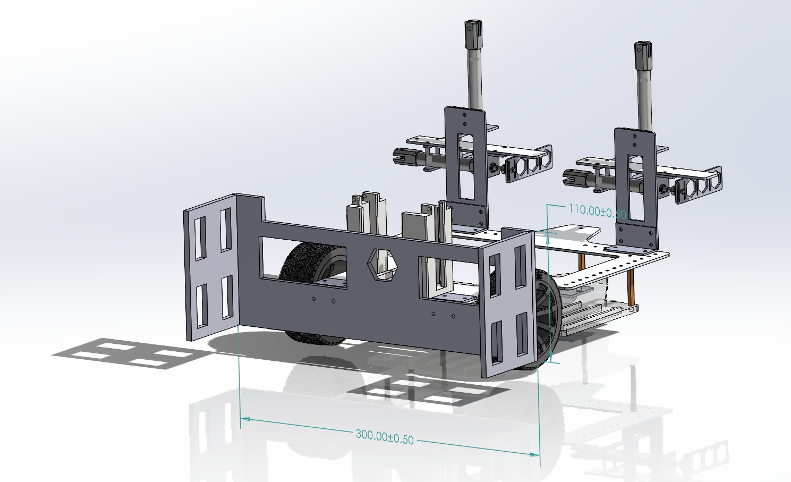
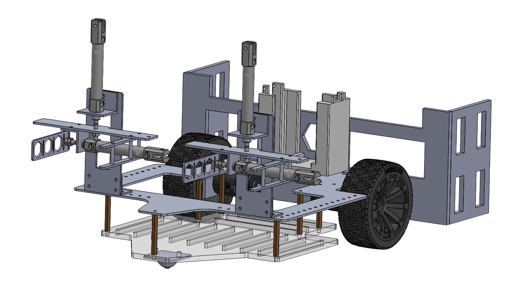
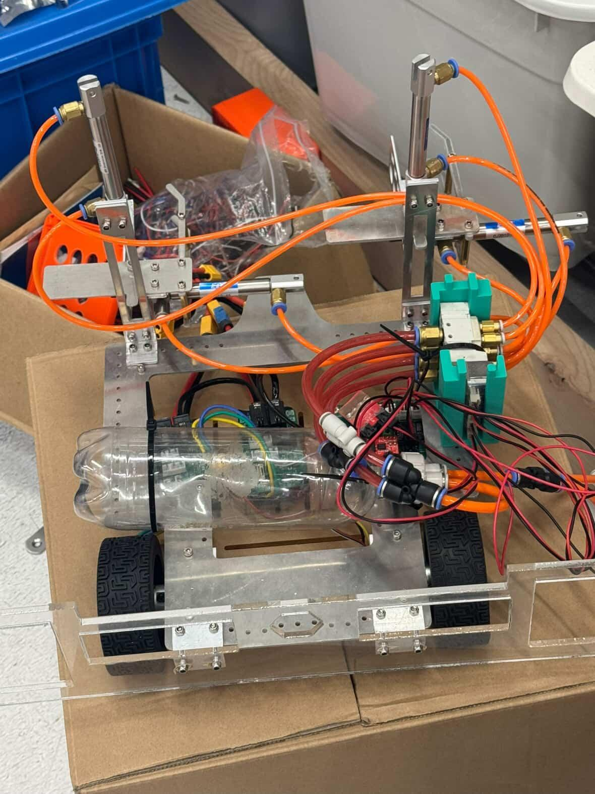
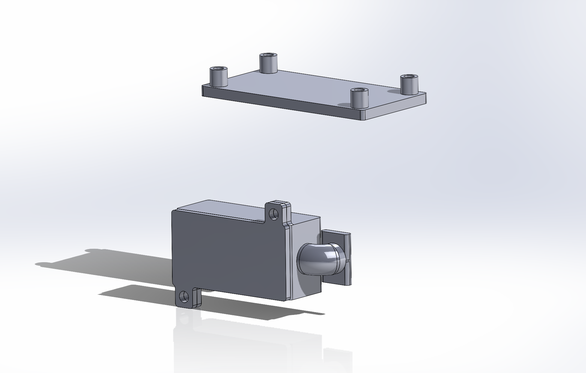
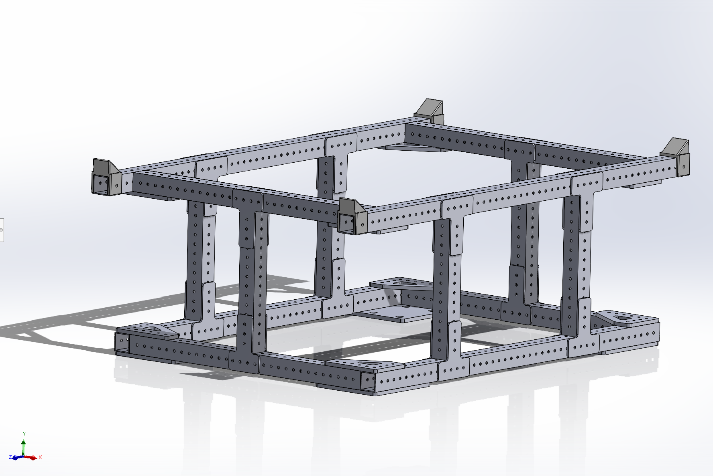
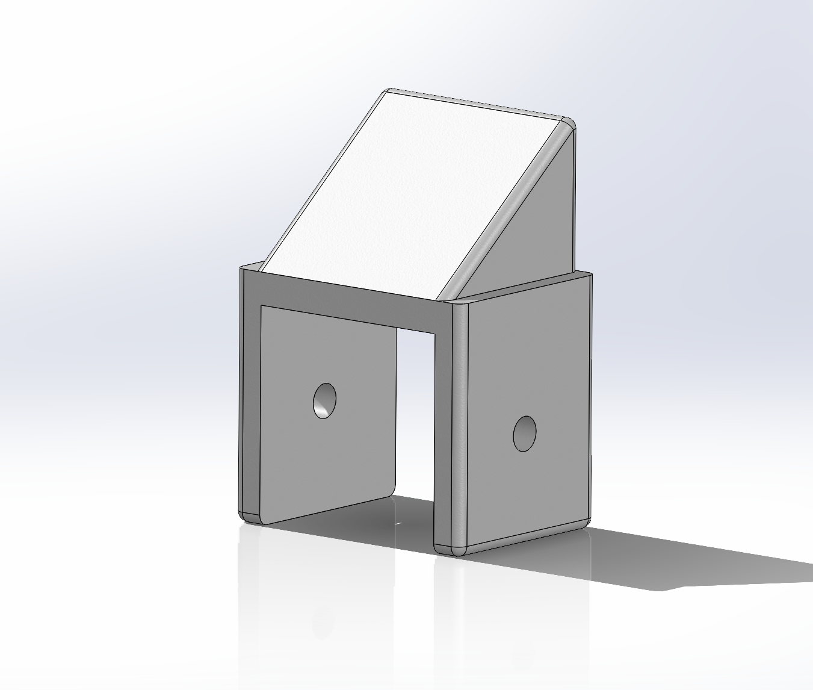
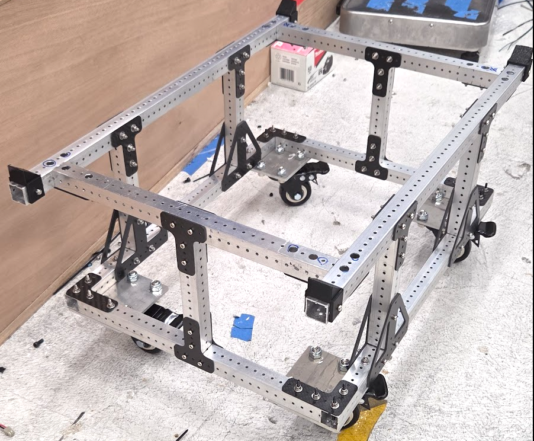
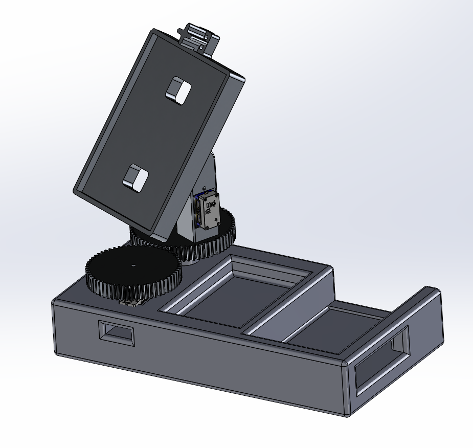
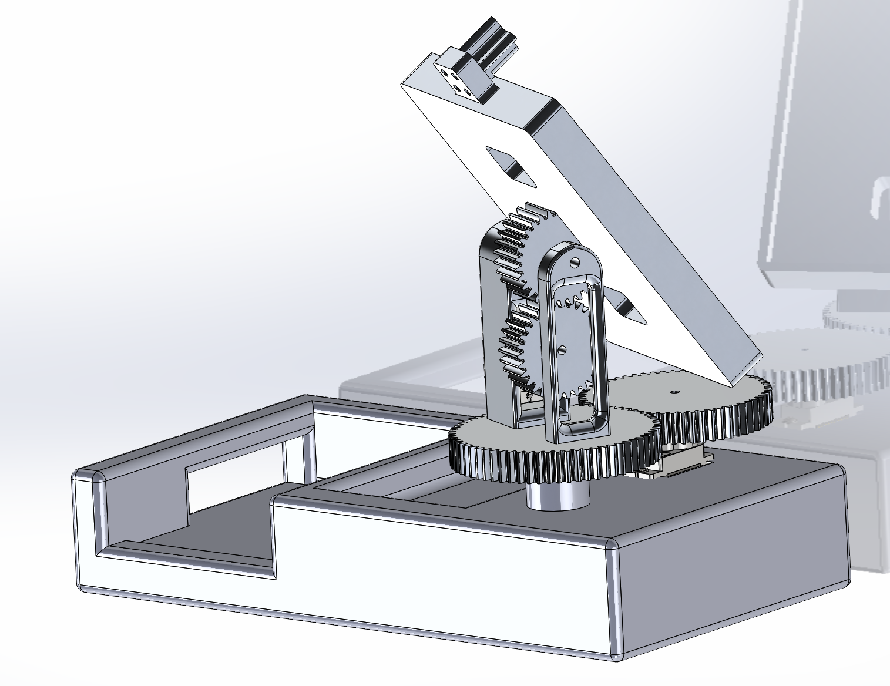
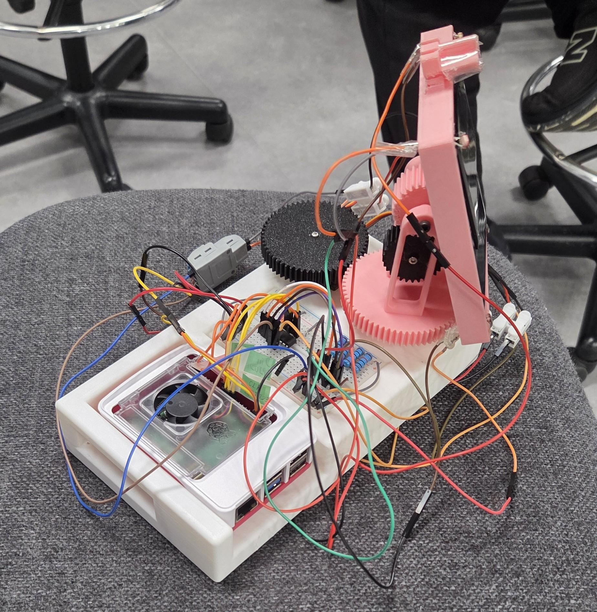

Sheet 04 · Drawing index
Projects
Four builds — drawn, machined, printed, and assembled. Drag a model to rotate it;
open a card for the full sheet, including its revision history.
PRJ-01
Robocon Mini-Competition Robot
REV C

drag to rotate
Grippers and a rear panel for HKU Robocon — CAD through waterjet and laser fabrication, with pneumatics in the final build.
Year2025
RoleMech. design & fab
StatusBuilt & competed
For HKU Robocon's internal mini-competition, the robot had to pick up and place game elements quickly and reliably under timed match conditions. I led the mechanical design and fabrication of its manipulation system — two front grippers and a rear panel.
I modelled the parts in CAD, then fabricated each with the process that suited it: waterjet for the load-bearing pieces and laser-cut acrylic for the lighter structural panels. After machining, I hand-assembled the grippers and panel into a working mechanism and tuned the fit between parts.
The final build integrated pneumatics alongside the existing electrical systems, so I designed around actuator stroke, mounting points, and air-line routing to keep the assembly compact and serviceable.


PRJ-02
Laundry Availability Sensor
REV C

drag to rotate
A 3D-printed enclosure for an ESP32 and light sensor that reports laundry-machine availability to a web page.
Year2025
RoleEnclosure design
StatusDeployed in dorm
At Shun Hing College's Tech Club, we built a device that detects whether a laundry machine is in use and reports its availability to a website, so residents can check before walking over. My responsibility was the physical enclosure housing the ESP32 microcontroller and the light sensor it uses to read the machine's status indicator.
I started with a single-piece printed casing, but it was difficult to print accurately and awkward to assemble around the electronics. I redesigned it into two separate casings that print cleanly on their own and fit together reliably — a change that noticeably improved our rapid-prototyping turnaround.
The result is a compact, reproducible housing that protects the electronics while leaving the sensor a clear line of sight to the machine.
PRJ-03
Robocon Transport Trolley
REV C

drag to rotate
A parametric transport trolley for ABU Robocon, with 3D-printed corner mounts that lock each robot in place.
Year2026
RoleParametric design
StatusBuilt & in use
The HKU team needed to move its competition robots safely between the workshop and the venue for ABU Robocon, so I designed a dedicated transport trolley sized around the robots it carries.
I built the trolley parametrically: top and bottom subassemblies driven by shared, editable dimensions, which I then combined into the final assembly. Working this way meant adjusting one key dimension propagated cleanly through the whole model instead of forcing manual rework.
To keep the robots from shifting in transit, I positioned 3D-printed mountings at all four top corners that locate and lock each robot in place — a simple, printable solution that holds up to real handling.


PRJ-04
Dual-Axis Solar Tracker
REV C

drag to rotate
A dual-axis tracker that chases the brightest light with photoresistors, a Raspberry Pi, and two servos.
Year2026
RoleMechatronics
StatusWorking prototype
A proof-of-concept dual-axis solar tracker that automatically reorients a panel toward the brightest available light. It senses the light balance with photoresistors, runs the control logic on a Raspberry Pi, and drives motion on two axes with a pair of servo motors — capturing more energy than a fixed panel would.
I led the 3D design, printing, and assembly of the structural frame, focusing on mechanical stability and smooth two-axis rotation under the weight of the panel and servos.
I then iterated on the mechanism through several print-and-test cycles: opening up motor-mount clearance, adding wire-routing holes to keep the wiring tidy, and refining the gear engagement until the motion was smooth and repeatable.

